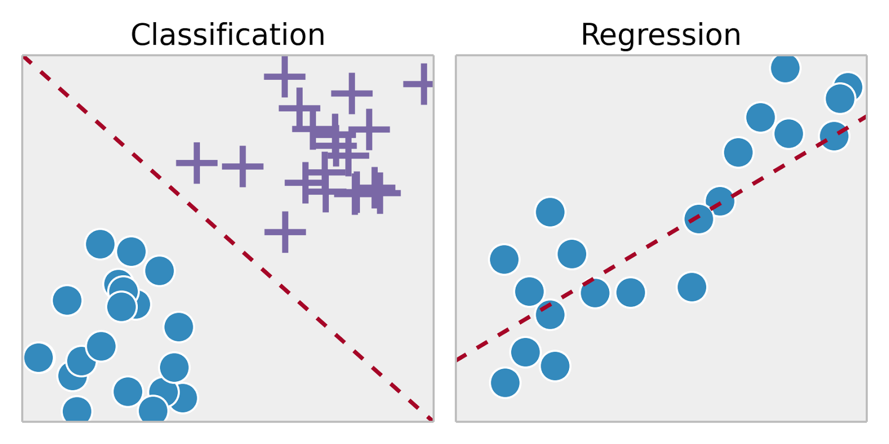
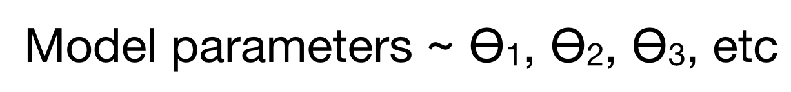
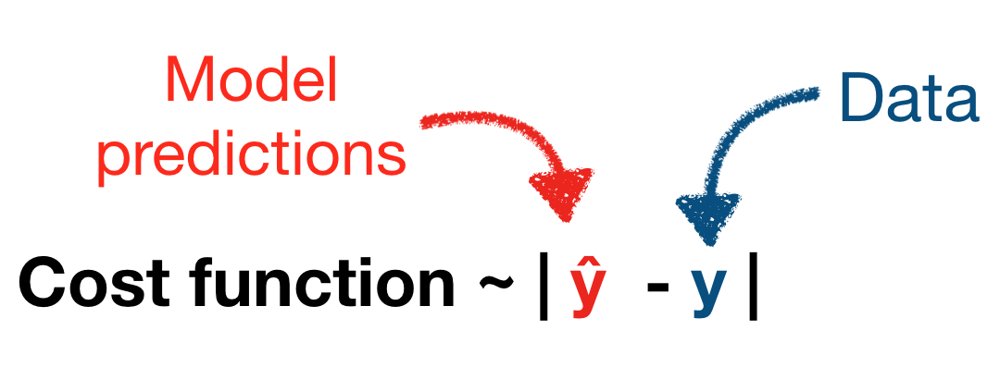
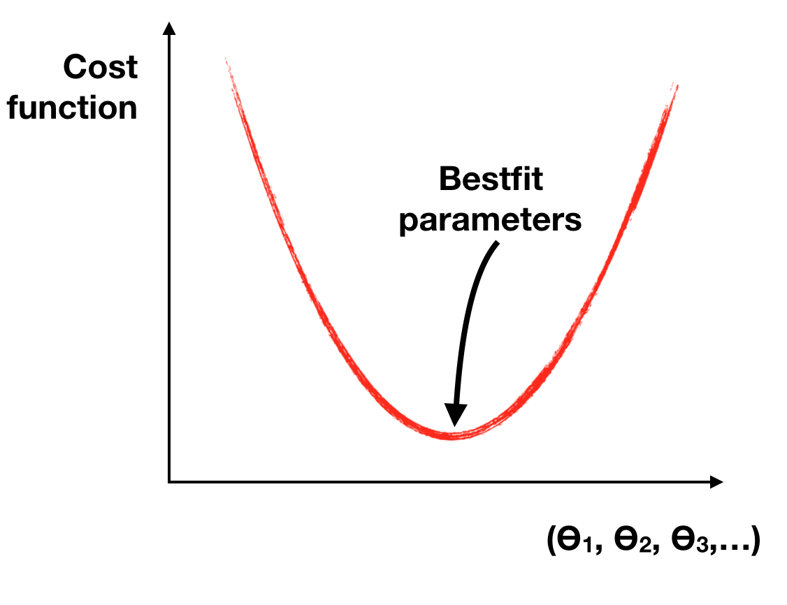
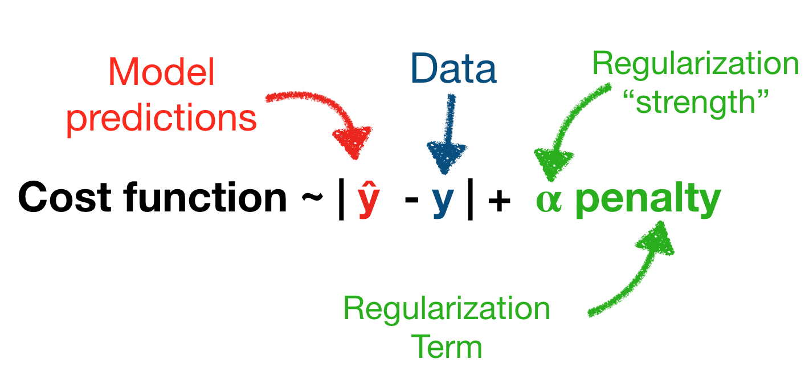
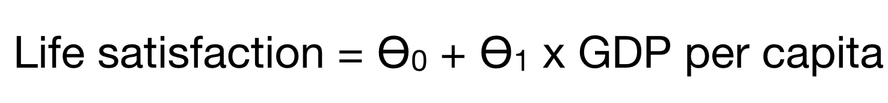
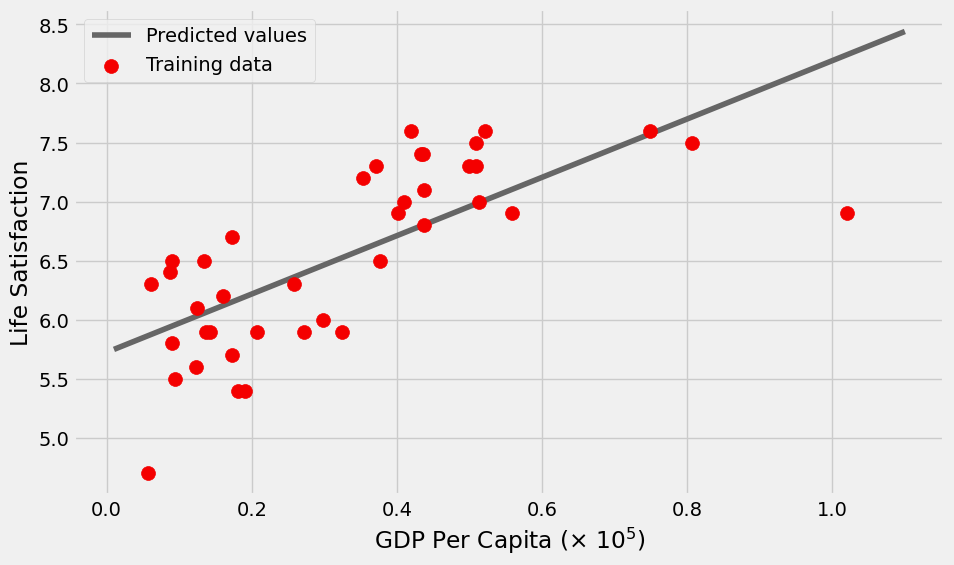
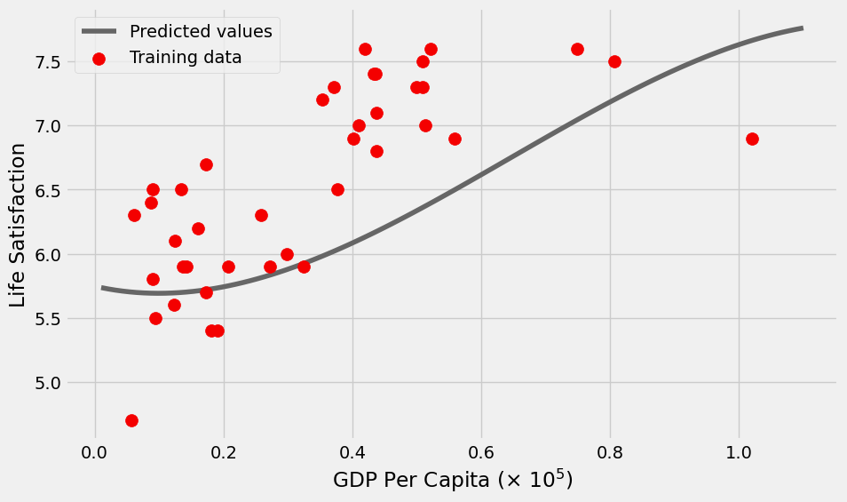
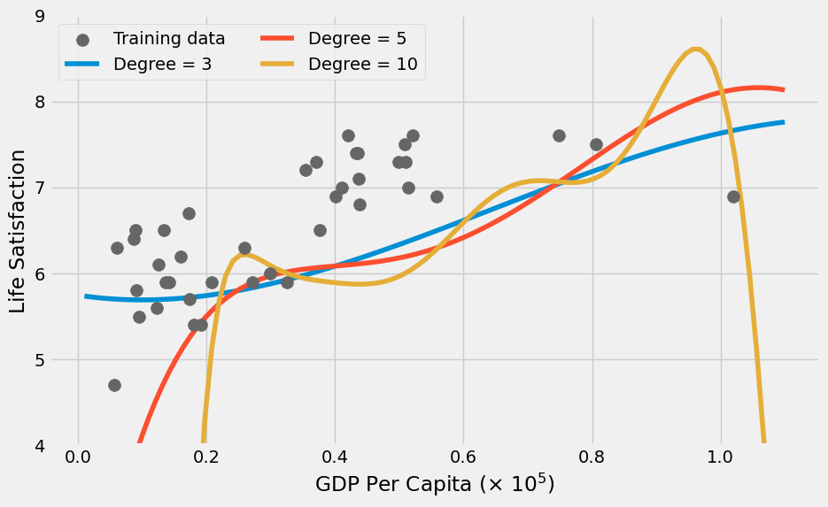

Show Code
from matplotlib import pyplot as plt
import numpy as np
import pandas as pd
import geopandas as gpd
np.random.seed(42)from matplotlib import pyplot as plt
import numpy as np
import pandas as pd
import geopandas as gpd
np.random.seed(42)
Today, we’ll walk through an end-to-end regression example to predict Philadelphia’s housing prices
Given your training set of data, which model parameters best represent the observed data?

The cost function measures the difference between the model’s predictions and the observed data

In scikit-learn, you will call the fit() method on your algorithm.

Key goal: how we can do this in a way to ensure the model is as generalizable as possible?

Or: “garbage in, garbage out”
Common issues:


Note: Crossing your fingers and hoping for the best is not the recommended strategy
Common to use 80% of data for your training set and 20% for your test set
For more information, see the scikit-learn docs.

We’ll load data compiled from two data sources: - The Better Life Index from the OECD’s website - GDP per capita from the IMF’s website
You can just download the CSV file from here.
data = pd.read_csv("./data/gdp_vs_satisfaction.csv")
data.head()| Country | life_satisfaction | gdp_per_capita | |
|---|---|---|---|
| 0 | Australia | 7.3 | 50961.87 |
| 1 | Austria | 7.1 | 43724.03 |
| 2 | Belgium | 6.9 | 40106.63 |
| 3 | Brazil | 6.4 | 8670.00 |
| 4 | Canada | 7.4 | 43331.96 |
import hvplot.pandasdata.hvplot.scatter(
x="gdp_per_capita",
y="life_satisfaction",
hover_cols=["Country"],
ylim=(4, 9),
xlim=(1e3, 1.1e5),
)
A simple model with only two parameters
Use the LinearRegression model object from scikit-learn.
This is not really machine learning — it simply finds the Ordinary Least Squares fit to the data.
from sklearn.linear_model import LinearRegressionmodel = LinearRegression()
modelLinearRegression()In a Jupyter environment, please rerun this cell to show the HTML representation or trust the notebook.
| fit_intercept | True | |
| copy_X | True | |
| tol | 1e-06 | |
| n_jobs | None | |
| positive | False |
# Our input features (in this case we only have 1)
X = data['gdp_per_capita'].values
print(X.shape)
X = X[:, np.newaxis]
print(X.shape)
# The labels (values we are trying to predict)
y = data['life_satisfaction'].values(40,)
(40, 1)X.shape(40, 1)y.shape(40,)Watch out! Scikit-learn expects the features to be a 2D array with shape: (number of observations, number of features).
In this case, we are explicitly adding a second axis with the np.newaxis variable.
Now, fit the model using the model.fit(X, y) syntax.
This will “train” our model, using an optimization algorithm to identify the bestfit parameters.
model.fit(X, y)LinearRegression()In a Jupyter environment, please rerun this cell to show the HTML representation or trust the notebook.
| fit_intercept | True | |
| copy_X | True | |
| tol | 1e-06 | |
| n_jobs | None | |
| positive | False |
model.coef_array([2.46904428e-05])intercept = model.intercept_
slope = model.coef_[0]
print(f"bestfit intercept = {intercept:.2f}")
print(f"bestfit slope = {slope:.2e}")bestfit intercept = 5.72
bestfit slope = 2.47e-05These represent “estimated” properties of the model — this is how scikit learn signals to the user that these attributes depend on the fit() function being called beforehand.
More info here.
Note: In this case, our model is the same as ordinary least squares, and no actually optimization is performed since an exact solution exists.
score() function that provides a score to evaluate the fit by.Note: you must call the fit() function before calling the score() function.
Rsq = model.score(X, y)
Rsq0.5191537823628938Use the predict() function to predict new values.
# The values we want to predict (ranging from our min to max GDP per capita)
gdp_pred = np.linspace(1e3, 1.1e5, 100)
# Sklearn needs the second axis!
X_pred = gdp_pred[:, np.newaxis]
y_pred = model.predict(X_pred)with plt.style.context("fivethirtyeight"):
fig, ax = plt.subplots(figsize=(10, 6))
# Plot the predicted values
ax.plot(X_pred / 1e5, y_pred, label="Predicted values", color="#666666")
# Training data
ax.scatter(
data["gdp_per_capita"] / 1e5,
data["life_satisfaction"],
label="Training data",
s=100,
zorder=10,
color="#f40000",
)
ax.legend()
ax.set_xlabel("GDP Per Capita ($\\times$ $10^5$)")
ax.set_ylabel("Life Satisfaction")

Scikit learn provides a utility function to split our input data:
from sklearn.model_selection import train_test_split# I'll use a 70/30% split
train_set, test_set = train_test_split(data, test_size=0.3, random_state=42)These are new DataFrame objects, with lengths determined by the split percentage:
print("size of full dataset = ", len(data))
print("size of training dataset = ", len(train_set))
print("size of test dataset = ", len(test_set))size of full dataset = 40
size of training dataset = 28
size of test dataset = 12Now, make our feature and label arrays:
# Features
X_train = train_set['gdp_per_capita'].values
X_train = X_train[:, np.newaxis]
X_test = test_set['gdp_per_capita'].values
X_test = X_test[:, np.newaxis]
# Labels
y_train = train_set['life_satisfaction'].values
y_test = test_set['life_satisfaction'].valuesUse the StandardScaler to scale the GDP per capita:
from sklearn.preprocessing import StandardScalerscaler = StandardScaler()# Scale the training features
X_train_scaled = scaler.fit_transform(X_train)
# Scale the test features
X_test_scaled = scaler.fit_transform(X_test)Now, let’s fit on the training set and evaluate on the test set
model.fit(X_train_scaled, y_train)LinearRegression()In a Jupyter environment, please rerun this cell to show the HTML representation or trust the notebook.
| fit_intercept | True | |
| copy_X | True | |
| tol | 1e-06 | |
| n_jobs | None | |
| positive | False |
model.score(X_test_scaled, y_test)0.35959585147159556Unsurprisingly, our fit gets worst when we test on unseen data
Our accuracy was artifically inflated the first time, since we trained and tested on the same data.
We’ll use scikit learn’s PolynomialFeatures to add new polynomial features from the GDP per capita.
from sklearn.preprocessing import PolynomialFeaturespoly = PolynomialFeatures(degree=3)# Training
X_train_scaled_poly = poly.fit_transform(scaler.fit_transform(X_train))
# Test
X_test_scaled_poly = poly.fit_transform(scaler.fit_transform(X_test))X_train_scaled_poly.shape(28, 4)model.fit(X_train_scaled_poly, y_train)LinearRegression()In a Jupyter environment, please rerun this cell to show the HTML representation or trust the notebook.
| fit_intercept | True | |
| copy_X | True | |
| tol | 1e-06 | |
| n_jobs | None | |
| positive | False |
model.score(X_test_scaled_poly, y_test)0.5597457659851047The accuracy improved!
We can turn our preprocessing steps into a Pipeline object using the make_pipeline() function.
from sklearn.pipeline import make_pipelinepipe = make_pipeline(StandardScaler(), PolynomialFeatures(degree=3))
pipePipeline(steps=[('standardscaler', StandardScaler()),
('polynomialfeatures', PolynomialFeatures(degree=3))])In a Jupyter environment, please rerun this cell to show the HTML representation or trust the notebook. | steps | [('standardscaler', ...), ('polynomialfeatures', ...)] | |
| transform_input | None | |
| memory | None | |
| verbose | False |
| copy | True | |
| with_mean | True | |
| with_std | True |
| degree | 3 | |
| interaction_only | False | |
| include_bias | True | |
| order | 'C' |
Individual steps can be accessed via their names in a dict-like fashion:
# Step 1
pipe['standardscaler']StandardScaler()In a Jupyter environment, please rerun this cell to show the HTML representation or trust the notebook.
| copy | True | |
| with_mean | True | |
| with_std | True |
# Step 2
pipe['polynomialfeatures']PolynomialFeatures(degree=3)In a Jupyter environment, please rerun this cell to show the HTML representation or trust the notebook.
| degree | 3 | |
| interaction_only | False | |
| include_bias | True | |
| order | 'C' |
Let’s apply this pipeline to our predicted GDP values for our plot:
y_pred = model.predict(pipe.fit_transform(X_pred))with plt.style.context("fivethirtyeight"):
fig, ax = plt.subplots(figsize=(10, 6))
# Plot the predicted values
y_pred = model.predict(pipe.fit_transform(X_pred))
ax.plot(X_pred / 1e5 , y_pred, label="Predicted values", color="#666666")
# Training data
ax.scatter(
data["gdp_per_capita"] / 1e5,
data["life_satisfaction"],
label="Training data",
s=100,
zorder=10,
color="#f40000",
)
ax.legend()
ax.set_xlabel("GDP Per Capita ($\\times$ $10^5$)")
ax.set_ylabel("Life Satisfaction");
plt.show()
The additional polynomial features introduced some curvature and improved the fit!
with plt.style.context("fivethirtyeight"):
fig, ax = plt.subplots(figsize=(10, 6))
# Original data set
ax.scatter(
data["gdp_per_capita"] / 1e5,
data["life_satisfaction"],
label="Training data",
s=100,
zorder=10,
color="#666666",
)
# Plot the predicted values
for degree in [3, 5, 10]:
print(f"degree = {degree}")
# Create out pipeline
p = make_pipeline(StandardScaler(), PolynomialFeatures(degree=degree))
# Fit the model on the training set
model.fit(p.fit_transform(X_train), y_train)
# Evaluate on the training set
training_score = model.score(p.fit_transform(X_train), y_train)
print(f"Training Score = {training_score}")
# Evaluate on the test set
test_score = model.score(p.fit_transform(X_test), y_test)
print(f"Test Score = {test_score}")
# Plot
y_pred = model.predict(p.fit_transform(X_pred))
ax.plot(X_pred / 1e5, y_pred, label=f"Degree = {degree}")
print()
ax.legend(ncol=2, loc=0)
ax.set_ylim(4, 9)
ax.set_xlabel("GDP Per Capita ($\\times$ $10^5$)")
ax.set_ylabel("Life Satisfaction")
plt.show()degree = 3
Training Score = 0.6458898101593084
Test Score = 0.5597457659851047
degree = 5
Training Score = 0.684620618656437
Test Score = -3.9465752545551585
degree = 10
Training Score = 0.8020213670053927
Test Score = -26330.208553806227

As we increase the polynomial degree, two things happen:
This is the classic case of overfitting — our model does not generalize well at all.
Ridge adds regularization to the linear regression least squares modelRemember, regularization penalizes large parameter values and complex fits
Let’s gain some intuition:
Important - Baseline: linear model - This uses LinearModel and scales input features with StandardScaler - Ridge regression: try multiple regularization strength values - Use a pipeline object to apply both a StandardScaler and PolynomialFeatures(degree=3) pre-processing to features
Set up a grid of GDP per capita points to make predictions for:
# The values we want to predict (ranging from our min to max GDP per capita)
gdp_pred = np.linspace(1e3, 1.1e5, 100)
# Sklearn needs the second axis!
X_pred = gdp_pred[:, np.newaxis]from sklearn.linear_model import Ridge
# Create a pre-processing pipeline
# This scales and adds polynomial features up to degree = 3
pipe = make_pipeline(StandardScaler(), PolynomialFeatures(degree=3))
# BASELINE: Setup and fit a linear model (with scaled features)
linear = LinearRegression()
scaler = StandardScaler()
linear.fit(scaler.fit_transform(X_train), y_train)
with plt.style.context("fivethirtyeight"):
fig, ax = plt.subplots(figsize=(10, 6))
## Plot the data
ax.scatter(
data["gdp_per_capita"] / 1e5,
data["life_satisfaction"],
label="Data",
s=100,
zorder=10,
color="#666666",
)
## Evaluate the linear fit
print("Linear fit")
training_score = linear.score(scaler.fit_transform(X_train), y_train)
print(f"Training Score = {training_score}")
test_score = linear.score(scaler.fit_transform(X_test), y_test)
print(f"Test Score = {test_score}")
print()
## Plot the linear fit
ax.plot(
X_pred / 1e5,
linear.predict(scaler.fit_transform(X_pred)),
color="k",
label="Linear fit",
)
## Ridge regression: linear model with regularization
# Plot the predicted values for each alpha
for alpha in [0, 10, 100, 1e5]:
print(f"alpha = {alpha}")
# Create out Ridge model with this alpha
ridge = Ridge(alpha=alpha)
# Fit the model on the training set
# NOTE: Use the pipeline that includes polynomial features
ridge.fit(pipe.fit_transform(X_train), y_train)
# Evaluate on the training set
training_score = ridge.score(pipe.fit_transform(X_train), y_train)
print(f"Training Score = {training_score}")
# Evaluate on the test set
test_score = ridge.score(pipe.fit_transform(X_test), y_test)
print(f"Test Score = {test_score}")
# Plot the ridge results
y_pred = ridge.predict(pipe.fit_transform(X_pred))
ax.plot(X_pred / 1e5, y_pred, label=f"alpha = {alpha}")
print()
# Plot formatting
ax.legend(ncol=2, loc=0)
ax.set_ylim(4, 8)
ax.set_xlabel("GDP Per Capita ($\\times$ $10^5$)")
ax.set_ylabel("Life Satisfaction")Linear fit
Training Score = 0.4638100579740343
Test Score = 0.35959585147159556
alpha = 0
Training Score = 0.6458898101593084
Test Score = 0.5597457659851044
alpha = 10
Training Score = 0.5120282691427858
Test Score = 0.38335642103788325
alpha = 100
Training Score = 0.1815398751108913
Test Score = -0.05242399995626967
alpha = 100000.0
Training Score = 0.0020235571180508005
Test Score = -0.26129559971586125
LinearRegression() with the polynomial featuresTo be continued next time!